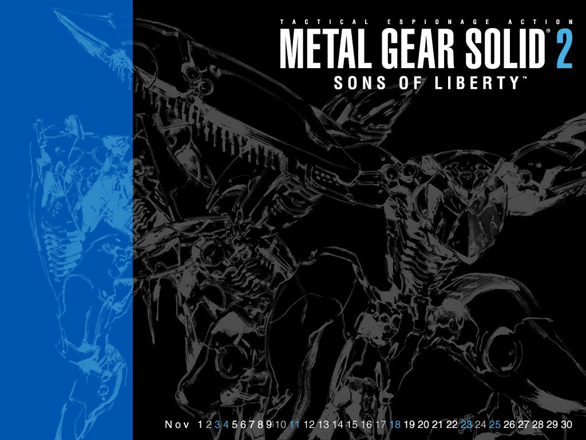

Inicio
Produção
Lançado em 2001, Metal Gear Solid 2: Sons of Liberty (MGS2), sob a direção de Hideo Kojima, estabeleceu-se como um marco na narrativa de videogames. A obra transcendeu as convenções típicas do gênero para oferecer um comentário sociopolítico e filosófico complexo, consolidando seu status como uma criação de profunda significância cultural que vai muito além do mero entretenimento.
O desenvolvimento de Metal Gear Solid 2: Sons of Liberty não representou apenas a criação de uma sequência para um dos títulos mais aclamados do PlayStation original, mas sim um ponto de inflexão na história da indústria de video games. Lançado em 2001 para o PlayStation 2, o jogo, sob a direção e produção de Hideo Kojima, com o design de Yoji Shinkawa e as composições de Harry Gregson-Williams e Norihiko Hibino, elevou o padrão para a narrativa interativa, a tecnologia gráfica e a profundidade temática.
O processo de criação de Metal Gear Solid 2 teve início com uma visão clara de seu diretor, Hideo Kojima, de conceber uma sequência que, por natureza, fosse subversiva e desafiasse as expectativas dos jogadores. A decisão mais radical e definidora do projeto, a troca do protagonista Solid Snake por um novo personagem, Raiden, originou-se de duas ideias principais. A primeira era o desejo de apresentar Solid Snake a partir da perspectiva de outro personagem, permitindo uma nova dimensão de apreciação para o veterano herói. A segunda, e mais pragmática, era a necessidade de contornar a dificuldade de escrever tutoriais de gameplay que seriam "pouco naturais" se direcionados a um veterano experiente como Snake. A introdução de um novato como Raiden permitiu que as mecânicas de jogo fossem explicadas de forma orgânica e crível.
O diário de Kojima, um documento que oferece uma janela rara para o processo de desenvolvimento de um título triplo-A, revela as inspirações multifacetadas que influenciaram o projeto. Suas anotações mostram uma profunda sensibilidade aos eventos globais, como o bombardeio do Iraque em 1998, codinome "Desert Fox", que o fez refletir sobre se "a história de MGS só pode existir em um mundo onde a paz prevalece". Além dos eventos geopolíticos, a cultura popular da época também teve um impacto significativo. Kojima e sua equipe foram influenciados por filmes como The Matrix e por jogos revolucionários como The Legend of Zelda: Ocarina of Time e Final Fantasy VIII, absorvendo novas ideias e técnicas para integrar à sua própria criação. Uma revelação intrigante do processo de design é a de que a missão inicial do petroleiro e a parte principal do Big Shell foram concebidas originalmente como conceitos separados. Apenas durante o desenvolvimento é que foram fundidas em um único jogo, pois a missão do petroleiro, isoladamente, era considerada muito curta.
A transição para a plataforma PlayStation 2 foi um desafio e, ao mesmo tempo, uma fonte de fascínio para a equipe da Konami Computer Entertainment Japan. O diário de Kojima registra sua ambição e, ao mesmo tempo, sua dúvida sobre o quão longe o novo hardware poderia ser levado na "representação de personagens realistas". A equipe de arte, liderada por Yoji Shinkawa, aproveitou o poder da nova tecnologia para criar gráficos de ponta que continuam a ser bem vistos hoje. O uso de cinemáticas que não são pré-renderizadas, mas sim criadas com o motor do jogo, foi um fator crucial para a longevidade visual do título, conferindo uma sensação de realismo e fluidez que, como observado por jogadores, ainda "se sustenta surpreendentemente bem".
O processo de produção de MGS2, conforme documentado no diário de Kojima, reflete a própria luta criativa que é um tema central do jogo. O criador enfrentou dúvidas sobre suas próprias habilidades e pressões externas, ecoando a jornada do protagonista Raiden para "reivindicar sua própria identidade" e a busca de Solidus por liberdade do controle. A narrativa sobre a liberdade de pensamento e a formação da própria identidade emerge de um processo de desenvolvimento que foi, ele mesmo, um ato de autoexpressão e de enfrentamento de adversidades. O jogo, portanto, transcende sua condição de mero produto de entretenimento, tornando-se um artefato cultural que documenta a jornada de seu criador e a resiliência da visão artística diante das limitações tecnológicas e das pressões do contexto.
História
A história principal, que se passa dois anos após o incidente de Shadow Moses, coloca o jogador no papel de um novo protagonista: o misterioso Raiden. Em vez do veterano e carismático Solid Snake, a maior parte da aventura se desenrola com este novato agente da Foxhound, enviado para investigar um ataque terrorista em uma plataforma de limpeza marítima conhecida como Big Shell. O grupo responsável, que se autodenomina "Sons of Liberty", tomou o controle da instalação e ameaça destruir o local, colocando em risco a vida de reféns, incluindo o presidente dos Estados Unidos.
Mas o que começa como uma missão de resgate se transforma rapidamente em uma teia complexa de conspirações. A trama aborda temas surpreendentemente atuais para a época, como a manipulação da informação, a "pós-verdade" e a influência de "fake news" em uma sociedade cada vez mais conectada. Enquanto Raiden tenta desvendar os segredos da Big Shell e a verdadeira identidade dos terroristas, o jogo questiona a própria noção de realidade, mergulhando o jogador em uma jornada psicológica e existencialista.
Personagens principais
Raiden
O protagonista do jogo, um novato agente da Foxhound que busca descobrir sua verdadeira identidade.
Solid Snake
O icônico herói da série, que faz uma aparição crucial na história.
Otacon
O aliado de Snake, que fornece suporte técnico e emocional.
The Patriots
Uma organização secreta que manipula eventos nos bastidores, controlando informações e influenciando a política global. Os Patriotas são os principais antagonistas da série, representando a luta contra o controle e a opressão.
Solidus Snake
Clone de Big Boss e líder dos Sons of Liberty, Solidus busca criar um mundo livre do controle dos Patriotas.
Revolver Ocelot
A princípio, age como o braço direito de Solidus. As verdadeiras intenções de Ocelot são um mistério, mas ele parece ter seus próprios objetivos em mente.
Vamp
Um membro da Dead Cell com habilidades sobre-humanas, como super velocidade, capacidade de andar sobre a água e uma aparente imortalidade, que o fazem parecer um vampiro. Possui uma conexão trágica com a agente Fortune.
Fortune
Uma membro da Dead Cell com a habilidade de manipular a sorte. Ela busca vingança contra aqueles que causaram a morte de seu pai, e sua conexão com Vamp é um dos mistérios da trama.
Fatman
Um dos membros da Dead Cell, Fatman é um especialista em explosivos e armadilhas. Ele tem uma personalidade excêntrica e um amor por brinquedos, que ele usa para criar suas armadilhas mortais.
Galeria
Contato
Tem alguma sugestão ou encontrou um erro no dossiê? Envie uma mensagem.